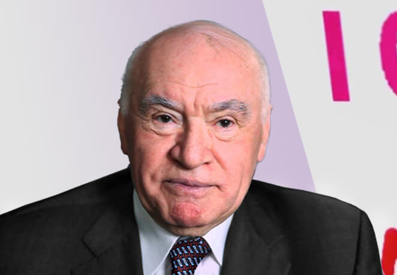
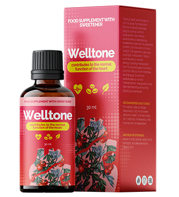

La verdad sobre Leonidas Barreda del Rio y el secreto de recuperación de los vasos destruidos revelado por él, que le ha costado la pérdida de reputación y apoyo entre los oficiales de alto rango de España.
“En realidad” – el programa en que es imposible mentir, ya que los participantes están conectados a un detector de mentiras
Hace mucho ya corre el rumor que ha sido creado un remedio único que es capaz de librar de la hipertensión en cualquier fase de la enfermedad. Pero el Ministerio de Sanidad no da comentarios respecto a esta cuestión, y en las farmacias no se puede encontrar tal fármaco. Además, se ha enterado que a Víctor García, un científico conocido en su entorno que está directamente relacionado con la creación del remedio contra la hipertensión, le han despidido del puesto y le han prohido participar en cualesquiera conferencias médicas. La situación actual está cubiera de misterio. Hoy hemos averiguado que sucede en realidad y que nos ocultan . Todos los participantes del programa dicen solo la verdad, porque el detector de mentiras, al que están conectados, no les deja mentir.
Hoy ha aceptado pasar por la prueba con el detector de mentiras Leonidas Barreda del Rio, el médico destinguido, doctor en ciencias médicas, profesor de categoría superior, el Jefe del Instituto de Cardiología de España. Antigüedad de trabajo – más de 40 años.
Presentador: ¿Señor Leonidas, Usted está listo para contestar a las preguntas?
Leonidas Barreda: Sí, por supuesto.
El detector de mentiras (polígrafo) está encendido
Presentador: ¿Su nombre es Leonidas?
Leonidas Barreda: Sí
Respuesta del polígrafo: Es verdad.
Presentador: ¿Es verdad que en España ha aparecido un medicamento eficaz contra la hipertensión?
Leonidas Barreda: Sé poco de eso
El detector de mentiras emite un sonido adecuado, que significa que el oponente dice mentiras. El presentador a penas logra calmar el público del estudio emocionado.
Presentador: ¿Es verdad que empresas farmacéuticas no quieren poner en venta fármacos realmente eficaces?
Leonidas Barreda se ha puesto muy nervioso, ha cabeceado, pero no ha dicho ni una palabra.
Presentador: Corren rumores que a su colega que estaba directamente relacionado con la creación de un remedio eficaz contra la hipertensión le han despedido del puesto y le han prohibido participar en cualesquiera conferencias médicas. ¿Es verdad?
El público ha quedado inmóvil, está esperando la respuesta de Leonidas Barreda. El está callado durante un tiempo.
Leonidas Barreda: Sí, es verdad. Pero no “algún remedio”– sino el más nuevo, que permite recuperar hasta los vasos muy destruidos y "obstruidos" en 1-2 meses del uso. ¡No tiene análogos en el mundo! Es un remedio revolucionario que es capaz de salvar a muchas personas del dolor y sufrimientos. Si no entrar en detalles, el preparado influye en la causa de la enfermedad, gracias a que aparece una posibilidad de deshacerse totalmente de la hipertensión. Elimina los síntomas durante las primeras seis horas del uso, gracias a su componente activo. Lo que permite como se dice, respirar libremente, después de comenzar el ciclo de tratamiento ya. El tono de los vasos se recupera totalmente después del ciclo de tratamiento. Además es eficaz en cualquier fase de la hipertensión. Claro que el remedio ha pasado por los ensayos clínicos. También salva de todas las consecuencias mortales a las que puede llevar las hipertensión. ¡Este preperado ha pasado por todos los ensayos clínicos necesarios, que han demostardo su eficacia muy alta (es 12-15 veces más eficaz que todos los análogos conocidos)! Mucha gente está esperando este remedio, pero no lo ponen en venta intensionalmente…
La respuesta del polígrafo: Es verdad.
Presentador: ¿Cómo se llama este remedio?
Leonidas Barreda: Se llama . Es suficiente ver los resultados de los ensayos clínicos para entender cuanto útil y necesario es este remedio.
La respuesta del polígrafo: Es verdad.
Los resultados de los ensayos clínicos de ,
realizados en el Centro Español de Cirugía Cardiovascular
Presentador: ¿No se vende en farmacias ?
Leonidad Barreda: No. Ahí está la cosa. Precisamente por eso han despedido del trabajo a Víctor García, cientifico y mi compañero. Y han cubierto por un halo de misterio toda esta situación. Y este remedio que no tiene absalutamente ningunos efectos secundarios, no lo han admitido a la venta en las cadenas de farmacias. Y lo han frenado a nivel más alto. Sin explicar las razones.
¡Si una persona tiene la hipertensión, simplemente no tiene con que curarse!
¡Y si se dirige a los médicos, cualquier de ellos aconsejará los mismos remedios caros (normalemnte importados) que no ayudan! ¿Y saben por qué prescriben precisamente esto? Porque a cada uno de los médicos los jefes ordenan qué remedios han de prescribir. Los mismos jefes reciben dinero (sobornos) por “la promoción” de ciertos medicamentos de los gigantes farmaceuticos famosos.
Además hay que entender que los gigantes framacéuticos (los que producen pastillas con las que están llenas las farmacias) no están interesados economicamente en que la gente se vuelva sana. Es desventajoso para ellos. Por eso venden generalmente lo que ayuda solamente para un tiempo, y bloquean y aniquilan de todas maneras remedios realmente eficaces.
Presentador: Corren rumores que un gran apoyo en la defensa de la reputación del científico Víctor García ha prestado Irene Chávez Gómez
Leonidas Barreda: Sí, es así.
Presentador: Nos ha sido muy difícil convencer a señora Irene Chávez participar en nuestro programa, pero al final lo hemos logrado. Recibid, señora Irene Chávez Gómez – Doctora en ciéncias médicas, profesora de categoría superior, la jefa del Instituto de Cardiología de España. Antigüedad de trabajo - 25 años.
Señora Chávez entra en el estudio. Se sienta sobre la silla. El operador quiere ponerle los sensores del detector de mentiras. Señora Chávez se niega.
Irene Chávez : Disculpe, pero he llegado aquí al estúdio para dar comentarios profesionales como un cardiólogo acerca del despido escandaloso del científico merecido, que ha aplicado muchos esfuerzos para crear un remedio eficaz contra la hipertensión. No he dado permiso para el uso de un detector de mentiras, por eso no hay que conectarme a él.
Presentador: Iréne, tales son las reglas de nuestro programa. Sin detector de mentiras no podremos saber – si dice Usted la verdad o no.
El público comienza a indignarse. El ruido va creciendo. Señora Chávez se ve obligada a ponerse los sensores. En seguida registran su impulso elevado – la cardióloga principal de España está nerviosa.
Presentador: Señora Irene, ahora le haré una pregunta, a la que le pido contestar con toda sinceridad. ¿Prescriben Usted y las personas a su cargo a los pacientes los remedios que no ayudan, pero por los que a Ustedes los pagan, posiblemente?
Irena Chávez: No.
El detector de mentiras emite un sonido adecuado, que dice que la médica dice mentiras. El presentador a penas logra calmar al público del estudio.
Presentador: Señora Irene, diga, por favor, ¿si conoce Usted tal preparado como . ¿Es realmente tan bueno como lo dice señor Barreda?
Irene Chávez: Si, conozco este preparado. Y es conocida su eficacia. Actualmente es el mejor preparado para la curación de la hipertensión.
Respuesta del polígrafo: Es verdad.
Clinicamente determinado que es 12 veces mas eficaz que otros preparados para la curación de tales enfermedades como
- Dolor de cabeza
- Frecuencia cardíaca acelerada
- Puntitos negros delante de los ojos (moscas)
- Apatía, irritabilidad, somnolencia
- Visión borrosa
- Suduración excesiva
- Fátiga crónica
- Edemas de la cara
- Entumecimiento y hormigueo de los dedos
- Oscilaciones de la presión
- Isquemia
- Hipertensión
- Infarto
Presentador: ¿Pero, a pesar de eso, Ustedes no lo prescriben a sus pacientes, preferiendo “promocionar” médicamentos caros e inútiles, por los que los productores les pagan sobornos?
Irene Chávez: Disculpe, no estoy dispuesta a responder mas a tales preguntas provocadoras. No he llegado aquí para eso.
Irene Chávez se quita los sensores y sale del estudio.El público vuelve a hacer ruido.
Presentador: Es la primera vez que pasa tal cosa en nuestro estudio.
El presentador a penas logra volver a calmar al público.
Presentador: Señor Leonidas, una pregunta para Usted. Una vez más, corren rumores que hoy en algunos lugares se puede obtener ─ ridículamente – casi gratis. ¿Es verdad?
Leonidas Barreda: Es así. Después de este escándalo este preparado ha suscitado interés en el Movimiento Nacional de España “la Población Sana”, que conjuntamente con el productor – la Sociedad Española de Cirugía Cardiovascular ─ realiza un programa especial, el objetivo del que es la destribución de la información sobre el remedio entre la población del país.
¡Según este programa cualquier persona que desea puede recibir un medicamento único de producción española para LA CURACION TOTAL DE LA HIPERTENSIÓN practicamente gratis!
Para esto es necesario hacer el pedido en el sitio web especialmente creado hasta inclusive).Después de que ha de esperar la respuesta del operador y escribir una dirección para la entrega. Después de eso el preparado será entregado.
Presentador:Señor Leonidas, muchas gracias por visitar nuestro programa y contarnos la verdad.
Leonidas Barreda: Espero que este preparado ayude a volver a estar sano a alguien. No seáis indeferentes a su propia vida. La hipertensión es una enfermedad muy común. Y voy a recordaros que un 67% de los hipertónicos ni siquiera se dan cuenta de estar enfermos. Aceptad que da mucha pena morir por una enfermedad de la que ni sabíais.
¡Atención! Ya que la información sobre ha aparecido en muchos sitios web y la cantidad de pedidos está creciendo exponencialmente, las reservas de se reducen drásticamente. Por eso si queréis curar la hipertensión con , pedidlo mientras está disponible.
Comentarios
Muchas gracias por el programa. Es muy interesante y emocional. He pedido en oferta, claro que voy a contar de eso a todos mis conocidos.
También he hecho el pedido. Es bueno que haya gente a la que no le da igual.
¡Confirmo todo! es un remedio excelente. Tengo problemas con la hipertensión durante 5 años o hasta más. No ayudaba nada. En cuanto he empezado a tomar , el problema se ha resuelto totalmente en unas 3 semanas. ¡Después de eso no había problemas con la presión ni una vez mas! Recomiendo probarlo a todos. ¡Además a tal precio!
También tengo la experiencia del uso de y también es positiva. Si no hubiera encontrado este remedio, tal vez ya no estaría vivo. ¡Es general, os lo recomiendo mucho!
He leido sobre en algún periódico médico. Muchos médicos lo alaban, dicen que es un gran descubrimiento de nuestra farmacología nacional.
Lo he pedido en oferta con un descuento de 50%. Es una pena que no se puede pedirlo mucho.
La verdad terrible sobre nuestros hospitales y farmacias. Ahora está claro porqué para la curación se gasta todo el dinero, y los resultados son imperceptibles. Los médicos son corruptibles
Mi amiga me ha contado sobre este remedio. Lo ha caracterizado muy bien. Ella ni tenía esperanza ya de curar la hipertensión. Muy a menudo se quejaba de que le dolía la cabeza y el corazón. Ultimamente estaba diciendo que no llegaría a vivir ni siquiera hasta 60 años. Lleva unas tres semenas tomando . Ya corre como una niña. Ha empezado a decir que vivirá hasta cien años. ¡Pués, así es!
Yo tenía una hipertensión complicada. Primero visitaba a los médicos, no ayudó. Después – a diferentes curadores, de esto ni hablar quiero. Hace unas 3 semanas hemos enterado de . Llevo 2 semanas tomándolo. Hay mejoramientos y son considerables. Hasta si costara 1.000, daría mucho más por este remedio.
He hecho el pedido. Han prometido que durante una semana podré recibirlo en el correo. Muy pronto.
He hecho el pedido
Desde hace mucho tengo la hipertensión. Un dolor sordo, la taquicardia, debilidad me acompañaban constantamente. He probado muchos preparados y procedimientos, incluso diferentes recetas populares. Nada ha ayudado tanto como . ¡Este preparado es una maravilla!
La presión se ha normalizado durante 2 semanas del uso de . ¡Nuestros científicos son los mejores del mundo!
¡Gracias!